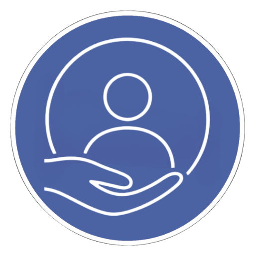
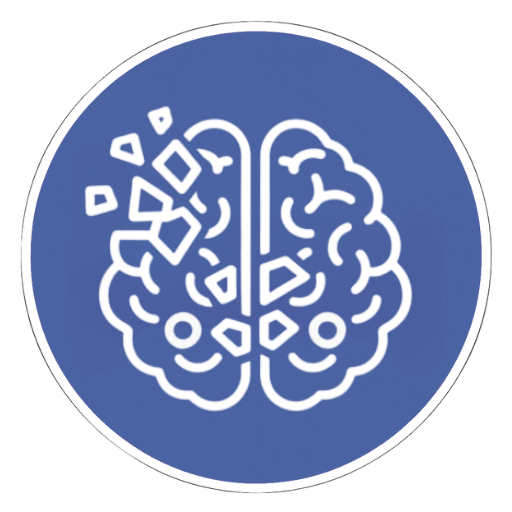
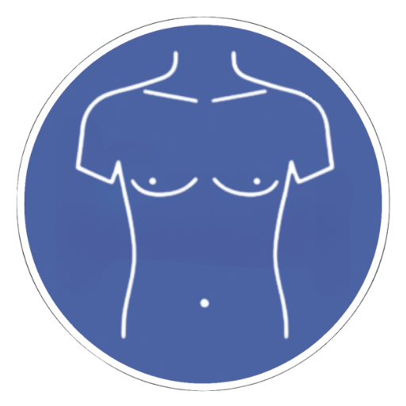

Cuidados clínicos
protocolizados para los pacientes ingresados en la Unidad de
Ictus, según tipo de ictus y situación clínica.
Atención al paciente
Complicaciones neurológicas
Complicaciones sistémicas
Protocolos específicos